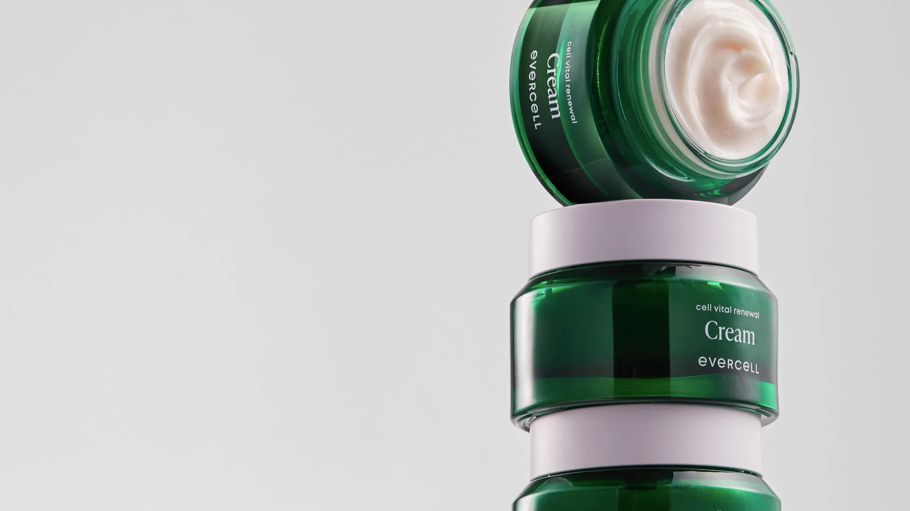
Evercell Product
Photography Campaign
Every Product, Clearly Defined
에버셀의 제품은 각각 다른 형태와 제형,
사용 방식을 가지고 있습니다.
이러한 차이를 정확하게 전달하기 위해
제품별 특성에 맞는 촬영 방식과 구도를 설계하고,
디테일과 질감이 자연스럽게 드러나는 비주얼을 제작했습니다.Each Evercell product has its own shape, texture,
and way of use. To bring out these differences,
PL2 developed a distinct concept and composition
for every product. Precise lighting
and close-up detail then reveal
what makes each formula in the skincare line its own.
Presenting the Collection
에버셀의 다양한 제품 라인업을 하나의 컬렉션으로 촬영했습니다.
제품군 전체가 일관된 시각 언어 안에서 자연스럽게 연결될 수 있도록
구성하여 브랜드의 제품 구성을 명확하게 전달했습니다.We also photographed the full Evercell lineup together,
letting each product’s details stand out while the range reads as one family.
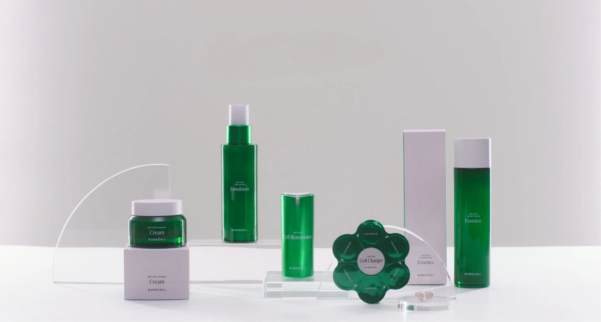
Essential Skincare
세럼과 크림, Cell Charger를 포함한 기초 스킨케어 라인을 촬영했습니다.
제품마다 다른 형태와 사용 방식을 고려하여 패키지의 디테일과 제품의 특징이
자연스럽게 드러날 수 있도록 구성했습니다.The essential line, from serums and creams to the Cell Charger,
was shot with compositions shaped around each product’s form,
letting the packaging details speak for themselves.
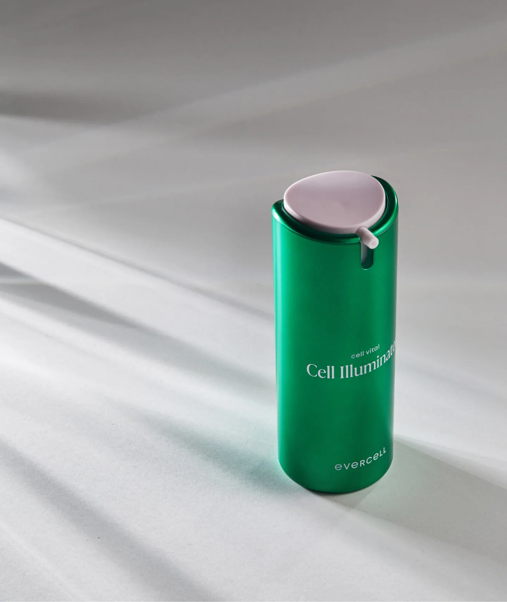
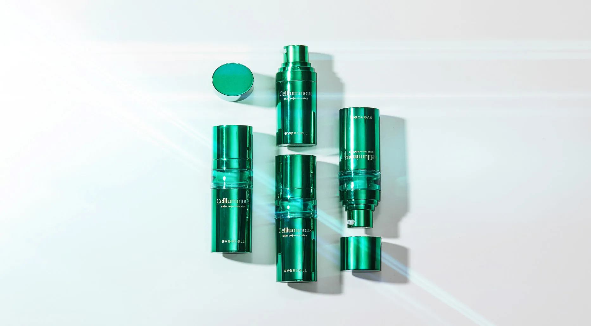
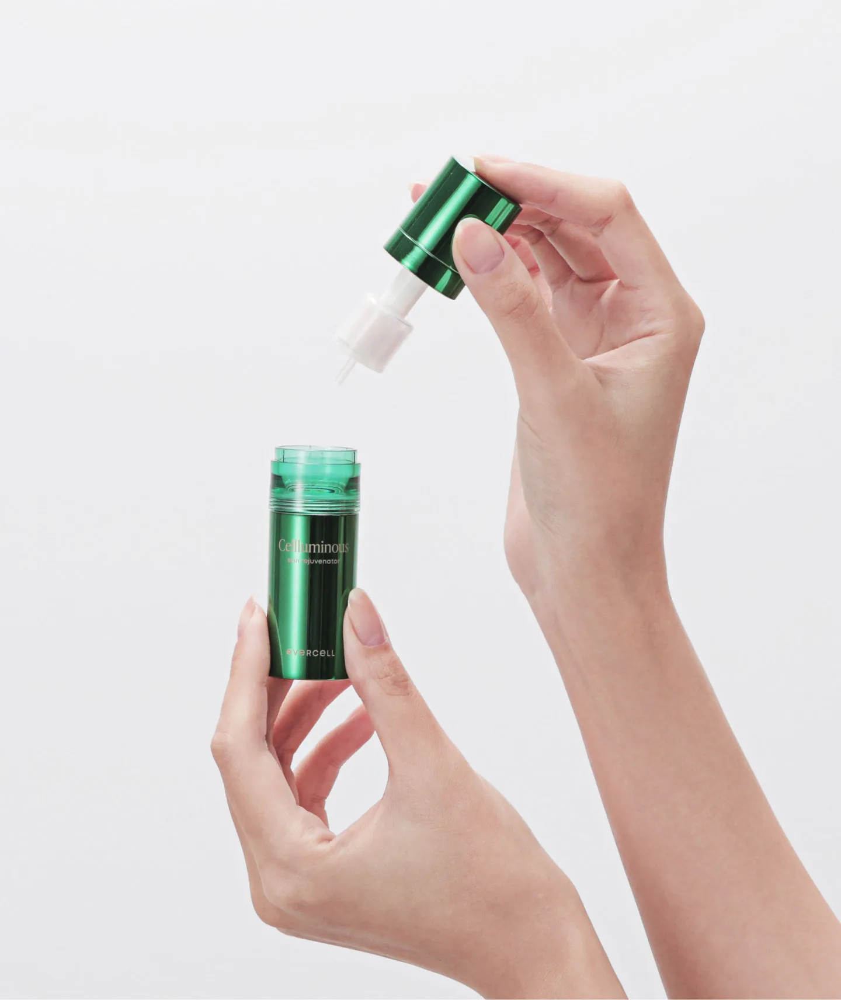
Cell Charger
선케어 제품의 형태와 제형을 중심으로 촬영하여 제품이 가진 사용감과
특징을 직관적으로 전달할 수 있는 비주얼을 제작했습니다.
제품의 질감과 컬러가 자연스럽게 표현될 수 있도록 디테일에 집중했습니다.The Cell Charger received a dedicated shoot,
with lighting and composition built around its signature form
and texture, keeping the look clean and minimal.
Sun Care
선케어 제품의 형태와 제형을 중심으로 촬영하여 제품이 가진 사용감과
특징을 직관적으로 전달할 수 있는 비주얼을 제작했습니다.
제품의 질감과 컬러가 자연스럽게 표현될 수 있도록 디테일에 집중했습니다.For Evercell’s sun care line, we focused on shape, texture, and finish, using bright,
sunlit tones to capture the fresh, lightweight feel of each product.
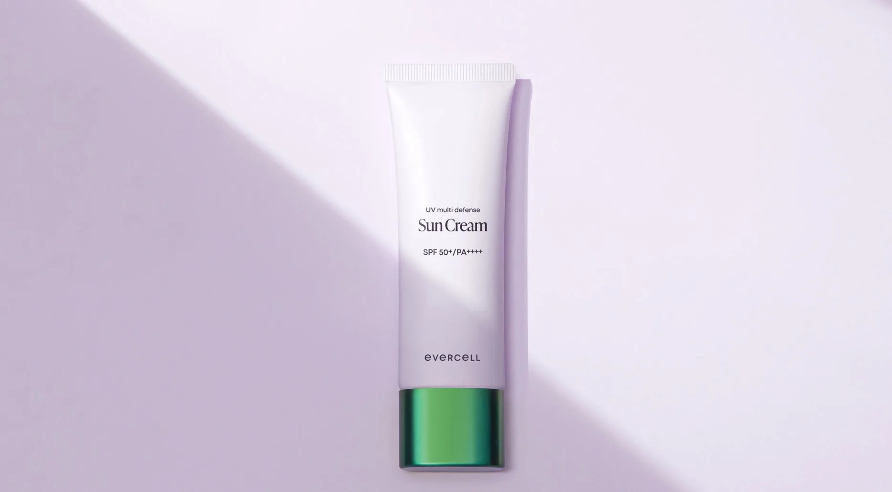
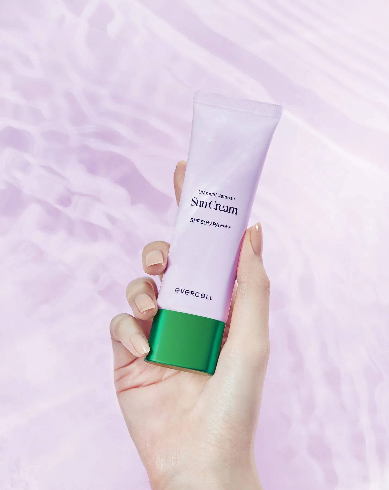
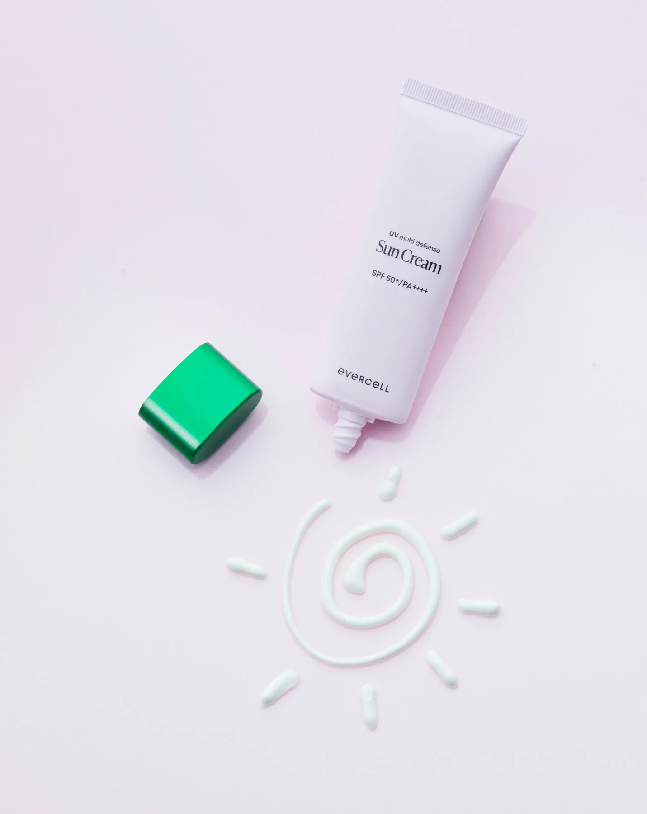
Campaign Portraits
배우 김서형과 함께한 캠페인 비주얼을 통해 제품이 가진
프리미엄 무드를 보다 선명하게 전달했습니다.
절제된 연출과 디테일한 라이팅으로 제품과 인물이 자연스럽게
어우러지는 이미지를 완성했습니다.We shot campaign portraits of actress Kim Seo-hyung for Evercell. With minimal styling, precise lighting, and considered composition, the images pair her presence with the products, conveying the quiet luxury at the heart of the brand.
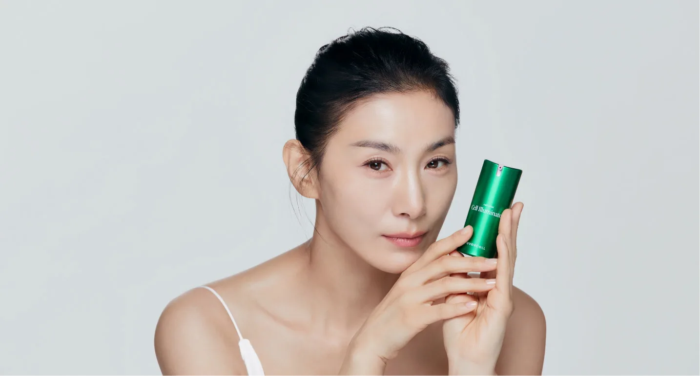
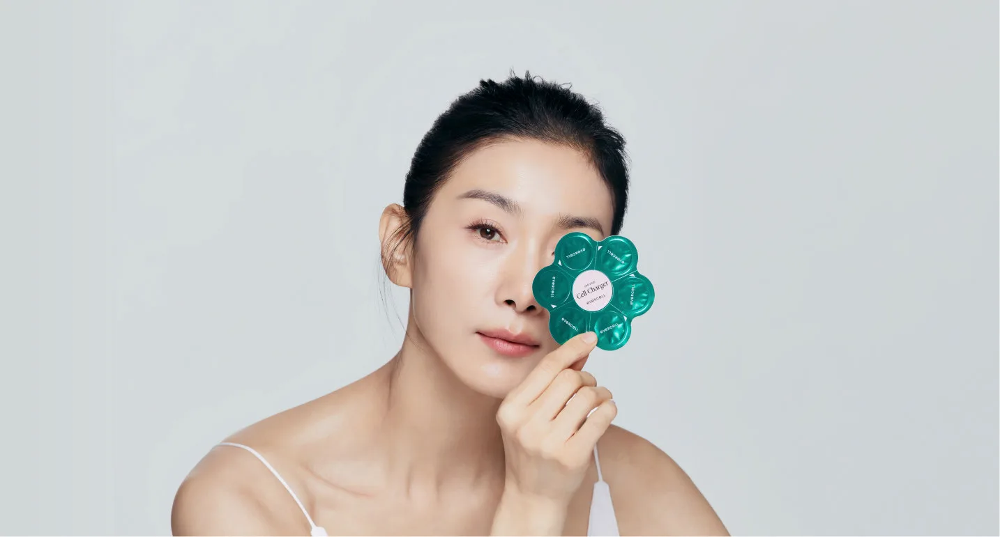
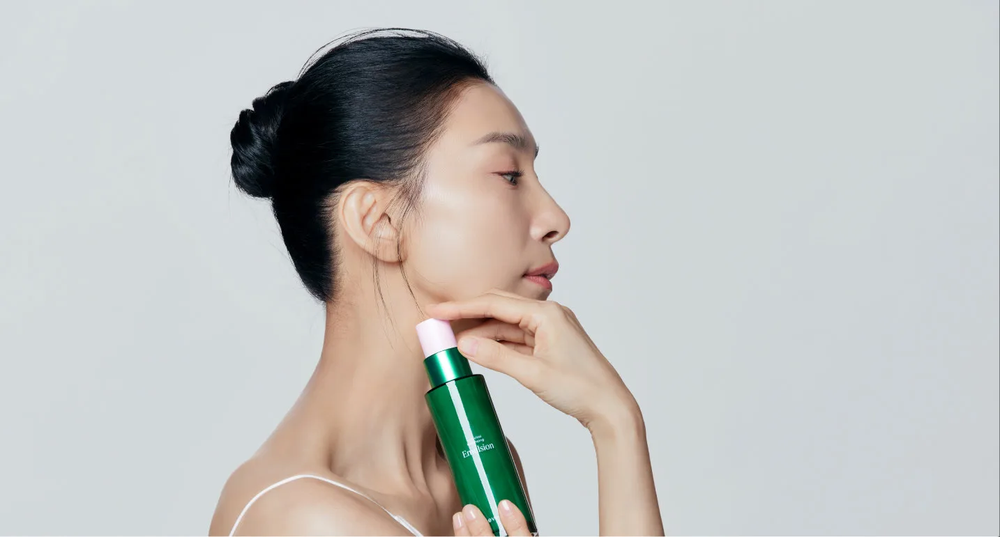